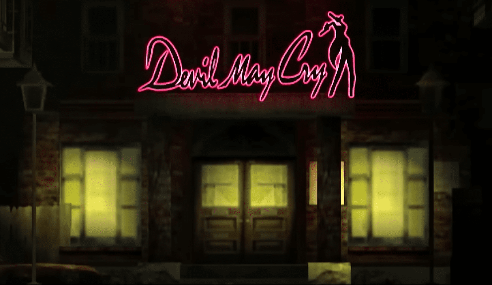
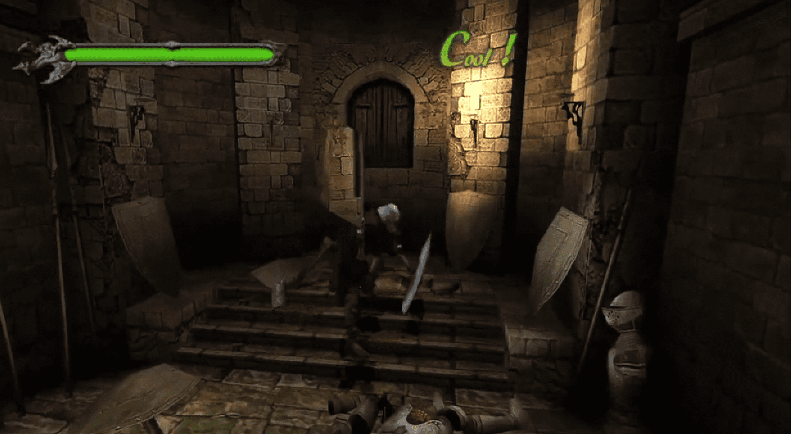

←Mision I: La Maldición de los Títeres Sangrientos→
Cuando comienza el juego, Dante estará de pie al pie de la escalera hacia el castillo. Técnicamente, la primera misión aún no ha comenzado, así que familiarízate con los movimientos de Dante y su desplazamiento. Justo arriba de las escaleras hay un nicho con un Orbe Amarillo. Los Orbes Amarillos solo se utilizan cuando Dante es eliminado en acción, lo que lo revive y lo vuelve a poner en acción donde lo dejó. Con todos los objetos en mano, ¡es hora de comenzar el juego! Sube las escaleras hacia el castillo y entra por la puerta abierta para comenzar la primera misión. Al ingresar al vestíbulo / salón del castillo, no habrá enemigos a la vista (aún) y varias puertas cerradas. Hay una puerta de color rojo y una puerta de color azul, y necesitas desbloquear la puerta de color azul para proceder. Para continuar con la misión, debes recolectar 45 Orbes Rojos que están dispersos por toda la habitación. Dirígete hacia arriba por la escalera y ve hacia la izquierda. Toma todos los orbes rojos que puedas ver, mientras practicas tu habilidad para saltar en la pared. En realidad, hay un lugar oculto en la punta de la lanza de Mundus donde, si vienes por detrás de Mundus y saltas sobre la estatua, también puedes saltar sobre la lanza y recibir una buena cantidad de orbes rojos.
Una vez que hayas recolectado 45 Orbes Rojos, corre hacia la puerta roja con esas caras de esqueleto. Paga los orbes y continúa hacia adelante. Dirígete a través del siguiente conjunto de puertas y sube la escalera hasta la parte superior, donde podrás vislumbrar un agujero agrietado en el techo. Pero antes de hacer eso, ¡hay un extra especial para obtener! Salta a través del agujero agrietado en el techo e inspecciona el títere que sostiene un objeto brillante para obtener una Llave Oxidada. Una vez que hayas tomado el objeto, ¡deja el área para desencadenar tu primera batalla contra un enemigo! Asegúrate de usar tu espada para el golpe mortal, ya que eso te recompensará con más orbes rojos. Después de matar a los dos títeres, salta y acaba con el último. Regresa al Vestíbulo Principal. Allí, ve hacia la izquierda y desbloquea las puertas azules con la Llave Oxidada para ingresar a una habitación llena de títeres sin vida y un gran plano rojo.
Quita algunas mesas si quieres y ve hacia la esquina superior derecha, donde encontrarás un gran círculo azul rodeado de runas. Golpea el círculo hasta que los símbolos de las runas estén completamente iluminados y monta el ascensor debajo de los pies de Dante para bajar. En esta arena, destruye a todos los títeres con algunos combos calientes. ¡Mantén un ojo en tus combos y asegúrate de evadirte! Además, algunos títeres estarán equipados con una Escopeta (!), y cada disparo es muy doloroso, ¡así que mantente alerta! Después de la primera oleada, aparecerá otra oleada para atacarte. Es importante acabar con ellos rápidamente con tus combos. De lo contrario, pueden abrumarte con sus ataques a distancia. Una vez que estén todos muertos, sube por el ascensor de vuelta a la habitación del avión. ¡Mata a los títeres ahora vivos para desbloquear las puertas hacia la siguiente habitación y completar tu primera misión!
Juez de la muerte
Cuando comience la misión, Dante estará parado dentro de un pasillo circular. Antes de explorar los pasillos, gira a la izquierda de Dante y ve hasta el final del pasillo con el cuadro espeluznante, luego entra por la puerta para encontrar una Estatua del Tiempo.Fuera, en el pasillo largo, avanza más allá de las puertas dobles hasta el final del pasillo, eliminando a los Marionettes que se interpongan en tu camino. Cultivar monstruos es una excelente manera de obtener orbes rojos.Con el Alastor equipado, Dante ahora puede usar Devil Trigger junto con algunas otras mejoras de combate adicionales. El Alastor es mucho más fuerte que el Force Edge, por lo que esta será tu arma de elección ahora. Ahora entra por las puertas dobles que tienes al lado para ingresar a la biblioteca. Avanza hasta el segundo piso (saltando con patadas o usando las escaleras) y verás un cuadro en la pared. Ignora el cuadro por ahora y ve hacia el otro lado del piso para encontrar una mesa
Examina el cuadro que está frente a la mesa donde obtuviste la escopeta para encontrar una Llave Oxidada. Sal de la biblioteca y llévala a las puertas dobles que están a mitad del pasillo largo para desbloquearlas. En la Sala de la Fuente, mata a todos los monstruos. La escopeta será una muy buena arma para usar. El Campo de Fuerza Azul bloquea la estatua de león, así que toma las escaleras a tu izquierda y sigue el camino circular que conduce a una puerta al final.En la Sala de la Tumba, mata a todos los monstruos. Ten cuidado porque hay muchos y pueden abrumarte. Mata a todos los monstruos en esta habitación y examina el ataúd que está a mitad de camino en la habitación.Golpea el ataúd varias veces para empujarlo hacia atrás y revelar una trampilla. Entra por la trampilla a un área subterránea con una estatua que sostiene el Bastón del Juicio. Toma el objeto y sal de nuevo a la biblioteca. Luego, sal a través del pasillo largo y serás atacado por un nuevo enemigo: ¡el Sin Scissor! La forma más eficiente de matarlos es saltar y golpearlos con el Alastor y luego dispararles con la escopeta. Ve hacia arriba por el pasillo hasta donde obtuviste el Alastor y examina la puerta con forma de esqueleto. Usa el Bastón del Juicio para desbloquear la puerta y así terminar la misión.
Misión III: Destructor de Ardor
La misión comienza dentro de la Catedral. Corre por el pasillo y examina el Orgullo del León en el altar para activar una escena cortada. Habrá un rayo de luz abriendo una puerta detrás de ti. Sal de la catedral por la nueva puerta abierta a un puente afuera. Desde aquí, hay algunos objetos ocultos para obtener mientras estás afuera. Primero, salta con patada hacia la cornisa encima de la puerta de la catedral. Cuando aterrices en la parte superior, muévete hacia el centro de la cornisa para obtener algunos Orbes Rojos.Ahora, salta de vuelta abajo y cruza el puente hacia el otro lado y examina la tableta en el centro de la estructura. Desde allí, haz tu camino de regreso a la catedral para desencadenar una batalla. Esto te dejará caer al agua debajo. Corre rápidamente hacia la derecha para que no te ahogues y pisa el círculo en el centro. Esto activará seis Sargasso, o calaveras gigantes, para que las golpees. ¡Atácalos rápidamente y destruye cada calavera o si no, te rodearán y te morderán!
Una vez que estén todos muertos, vuelve a pisar la plataforma central para teletransportarte de vuelta al puente de arriba. El puente ahora está roto, pero estás en el lado de la Catedral.Pasa por la puerta y avanza por el pasillo una vez más para recibir el Orgullo del León, ¡desencadenando tu primera pelea contra un jefe! Este es un jefe bastante difícil para el principio del juego. La mejor manera de vencerlo es activar tu devil trigger y atacar sin piedad su rostro con el Alastor. Trata de mantener cerca de él y cuidado con su ataque de garra. Si corres de él, te castigará con ataques a distancia y tus armas no le harán mucho daño. Solo esquiva sus dos ataques de garra frontal y contraataca para ganar. Esta estrategia se aplica a todas las apariciones de Fantom (sí, hay muchas) porque realmente no cambia. Lo único que aprende más adelante es un ataque de meteoros, donde el fuego sale de su espalda y luego llueve. Una vez que derrotes a Fantom, vuelve por la primera puerta al Puente Roto. Caer al agua para desencadenar tu primera misión secreta. Ve a la guía de misiones secretas para obtener detalles sobre cómo completarla. Después de terminar con eso, sal por la puerta por la que entraste al principio del nivel en la Catedral para terminar la misión.
Mision IV: Caballero negro
Comenzamos de nuevo en el pasillo largo. Puedes correr de vuelta a la Catedral para la misión secreta 2 o correr hacia la sala de la fuente a mitad del pasillo. Fantom, el jefe contra el que acabas de luchar, te persigue por el pasillo, así que entra en la habitación (a menos que quieras matarlo o empezar la misión secreta 3). Dentro de la sala de la fuente, usa el Orgullo del León en ese campo de fuerza. Ocurrirá una mini pelea contra Shadow.Cuando luches contra Shadow, simplemente activa tu devil trigger y dispara sin parar. Sigue esquivando mientras disparas, ya que Shadow causa un buen daño. Eventualmente, Shadow se convertirá en una esfera líquida. Atácalo con Alastor antes de que se transforme de vuelta en un León. Puedes llevarlo a estado rojo de una vez si estás en modo Devil Trigger. Los ataques cuerpo a cuerpo son ineficaces mientras Shadow está en modo León y las armas de fuego son ineficaces mientras está en modo Líquido. Después de que se vuelva rojo, solo esquiva por un rato. Eventualmente, explotará. Si te atrapa, explotará contigo en su boca causando más de la mitad de una barra de vida (o más) de daño.
Después de vencer a Shadow, dirígete a través de la puerta recién desbloqueada. Salta hacia abajo hasta el fondo para encontrar otro interruptor circular similar al que viste en la Misión 1 para activar una columna de ascensor. ¡Golpéalo para activarlo y monta la columna hasta arriba! Toma la Sentencia de Muerte y baja las escaleras para entrar por las puertas dobles. En este dormitorio, inserta la Sentencia de Muerte en la estatua junto al espejo. Después de que agarres el objeto Alma Melancólica que cae, Nelo Angelo aparecerá del espejo y se dirigirá hacia las puertas que conducen afuera.Después de salir afuera, si das un doble salto hacia arriba, pasarás por un agujero en el techo. Luego, si das otro doble salto hacia arriba hasta una torre, encontrarás un orbe azul. Después, salta hacia abajo en la plaza para pelear contra Nelo Angelo. Aparece tres veces en este juego, y la última vez es más difícil que las dos primeras, así que úsalo para calentarte para el futuro.
Él tiene algunos ataques, aprende a evitarlos. Tiene un combo básico de Corte/Corte/Doble Corte, similar al tuyo, con el timing adecuado. Simplemente corre de este, ya que incluso esquivar los cuatro cortes a corta distancia puede ser realmente difícil. Tiene un movimiento similar a un aguijón, que generalmente teletransporta antes. Pondrá su espada en una posición de apuñalamiento, como el Gotetsu de Kenshin. Luego cargará a una distancia increíble y te empalará si puede. Rueda fuera del camino y golpéalo. Él teletransportará la mayoría de las veces, para atraparte desprevenido. Cada vez que se teletransporte, estate listo para esquivar, ya que saldrá de él con un ataque. Tiene bolas de fuego que tarda un segundo en cargar, y si puedes golpearlo en ese segundo, bien por ti, lo interrumpirás. Si no puedes esquivarlo, no es tan difícil. También tiene el corte superior, luego el corte en picada. Esto te golpeará incluso en el aire, así que ten cuidado. Para matarlo, tienes que golpear en los momentos adecuados. Justo después de que ataca es bueno. Cuando tengas activado el Devil Trigger, ve todo a la ofensiva como lo hiciste con Phantom. Pero ten cuidado cuando no esté activo.
Nunca intentes golpearlo después de un teletransporte. Él está bastante lleno de sí mismo, y te provocará a menudo. Siéntete libre de arreglarle la cara cuando eso suceda. También se preparará para algunos movimientos levantando su espada en posición vertical. Golpéalo mientras hace esto, y retrocederá. Si lo golpeas de nuevo, quedará aturdido y podrás golpearlo un poco. En general, golpea y corre, las armas de fuego no funcionarán muy bien contra él y simplemente te lanzará bolas de fuego si estás a distancia.Cuando lo dañes lo suficiente, se teletransportará a otro lugar para continuar la pelea. Si tienes la paciencia, puedes "astillar" a Nelo Angelo hasta la muerte usando las pistolas colocando a Dante tan cerca de la pared que los ataques de Nelo Angelo pasen por encima de la cabeza de Dante, pero las pistolas de Dante aún pueden golpear a Nelo Angelo. Mientras Dante esté en un plano más bajo que Nelo Angelo, puedes hacer este truco. Ten en cuenta que Dante acumula Devil Trigger siempre que sus ataques golpeen al jefe, por lo que técnicamente puedes restaurar toda la vida de Dante (excepto en DMD) usando este truco de "astillado". Personalmente, creo que esta es una forma barata de jugar el juego y no es imposible vencerlo si juegas de manera inteligente. La misión termina después de vencerlo.
Mision V: Guiando el alma
Esta es una misión bastante corta y fácil. Comienzas en el patio donde luchaste contra Nelo. Ahora tienes exactamente 3 minutos para usar tu alma melancólica recién adquirida para desbloquear la puerta en la parte inferior de la torre dentro del castillo (donde montaste ese gran ascensor para obtener la Sentencia de Muerte). Debes derrotar a una Sombra para volver a entrar, ¡así que mátala rápidamente! 3 minutos deberían ser suficientes y deberías conocer la forma más efectiva de matarla para este punto (consulta la misión 4). Después de que la Sombra esté muerta, salta de nuevo a donde derrotaste a Nelo Angelo. En el techo frente a la torre donde obtuviste el orbe azul, puedes encontrar un montón de orbes rojos. Salta abajo y entra por la puerta que lleva de regreso a la habitación donde Nelo Angelo fue presentado por primera vez.
Corre por la habitación para entrar en el área de la torre nuevamente. Salta todo el camino hacia abajo y usa el Alma Melancólica en la puerta del león al pie de la escalera. ¡Úsala antes de que termine el temporizador de 3 minutos y termina la misión! ¿Qué pasa si el Alma Melancólica se queda sin energía? En lugar de volver a cargar el juego, ve a la puerta del segundo nivel en la sala de la fuente. Recuerda la habitación donde empujaste la lápida. Más allá hay una Estatua de Prisionero.Úsalo para recargar el Alma Melancólica y vuelve a intentarlo para llegar a la puerta de salida. Cuando salgas, habrá una Sombra en la Sala de la Fuente. Debes matar a esa Sombra para volver a entrar en la habitación similar a una torre. Si no puedes matar a la Sombra a tiempo, deberás recargar el Alma Melancólica nuevamente e intentarlo hasta que puedas llegar a la puerta en menos de tres minutos. ¡Una vez que entres por la puerta azul con la huella de león en la parte inferior de la torre, la misión termina!

Mision VI: Maldad de los Pasajes Acuáticos
Al comienzo de esta misión, ve hacia la derecha de Dante. Encontrarás un orbe azul allí si caminas hacia la izquierda del área de la cueva. Luego, avanza por los pasajes hasta llegar a una puerta a tu derecha. Entrarás en esta habitación donde pequeños conductos de alcantarillado recorren las paredes. Ve hacia la pared al final de la habitación y recoge una llave oxidada que se encuentra en uno de estos conductos. Pequeños insectos llamados Beezlebubs entonces atacarán a Dante. La escopeta se encargará de estos molestos insectos. Sal y Beezlebub estará en el pasillo. Entra en el pasillo al otro lado de la habitación de la que acabas de salir para encontrar algunos orbes verdes y un jarrón de orbes. Después de eso, baja por el pasaje principal para desbloquear la puerta hacia la próxima área de mazmorra. Corre por los pasajes y si necesitas salud, habrá algunos orbes verdes en el pasillo abierto a la izquierda de Dante. Después, te encontrarás con unas llamas azules iluminando el suelo, marcando el área donde lucharás contra la Death Scissor. La Death Scissor erige un campo de fuerza que limita los movimientos de Dante. Sin embargo, esto no debería ser un problema. Activa el Devil Trigger y simplemente sigue saltando y cortando hacia abajo para vencerlo. Cuando su cabeza esté roja y en llamas, usará un ataque de perforación giratorio contra ti. Simplemente esquiva, repite el proceso hasta que esté muerto. Derrota al enemigo para obtener acceso al pequeño altar al final del túnel de alcantarillado donde encontrarás la Luz Guía, terminando tu sexta misión.
Misión VII: Sosteniendo la llave de Ardor
Recuerda el dormitorio de donde vino Nelo Angelo. Allí es donde necesitas ir. La barra de vida de Dante se irá vaciando lentamente mientras corres, así que no te entretengas demasiado. El Fastidioso Fantasma volverá a aparecer cuando te acerques a la salida. Puedes pelear con él y matarlo con algunos cortes y disparos en la cara si quieres.Después de eso, mata a todos los Sin Scythes que veas en la oscura y gris habitación de la alcantarilla para desbloquear la puerta de salida de vuelta a la torre. Ataca el interruptor circular para activar la columna del ascensor. Monta hasta el dormitorio principal, ve a la estatua con el símbolo del sol en el centro de la habitación y usa la Luz Guía para desbloquear la puerta. Pasa por ella para terminar la misión.
Mision VIII: Regreso del legendario caballero negro
Aparecerás en una plataforma estrecha sobre el Salón Principal desde el comienzo del juego. Si quieres pasar tiempo ganando orbes rojos y comprando nuevas habilidades, deberías hacerlo ahora, ya que se acerca otra pelea de jefes. Más importante aún, no hay un temporizador de misión (como en la primera parte del juego fuera del castillo), así que puedes pasar todo el tiempo que quieras luchando por orbes rojos y comprando habilidades e ítems. Todavía puedes guardar pulsando Select y usando la función de guardar allí. Sin embargo, para continuar con la misión, necesitas saltar a otra plataforma para llegar a una nueva puerta. Hay una Estatua del Tiempo aquí, así que puedes comprar suministros allí. Dirígete a través de la puerta con forma de boca. Phantom volverá a luchar contigo. Las estrategias son básicamente las mismas. El método para atacar a Phantom no ha cambiado desde la primera vez que lo conociste. Usa Alastor y la Escopeta para atacarlo. Si más adelante lo tienes, incluso puedes probar la Pistola de Granadas y el Infierno de Ifrit. No olvides sus ataques, y necesitas conocerlos y cuándo esperarlos para ganar.
Su ataque principal es un barrido con su pata/pinzas. Lo hará si estás cerca, así que simplemente espera eso. Meterá su cabeza en el suelo, y de 4 a 6 géiseres de lava surgirán. Simplemente sigue caminando o corriendo para evitarlos. Su movimiento característico es su bola de fuego, que cargará en un orbe blanco caliente en su boca, y luego la soltará momentáneamente. Solo rueda para evitarla. Si te sientes con suerte, y estás a cierta distancia, puedes reflejarla con Alastor. No intentes saltar sobre ella, ya que la dirigirá y te golpeará. Si estás en su espalda, intentará usar su aguijón de escorpión contra ti. No es demasiado difícil de evitar. El último ataque, que encuentro más mortífero, es su salto. Saltará hacia ti y aterrizará donde estabas. Mi mejor táctica es saltar y seguir presionando triángulo para saltar sobre él mientras está en el aire. Luego aterrizarás sobre él, y todo estará bien. Si crees que puedes manejarlo, puedes engañar a Phantom para que aterrice en la placa de vidrio circular en el centro de la arena. Cinco aterrizajes harán que Phantom caiga a su muerte, aunque es otra pregunta si puedes sobrevivir tanto tiempo para que lo haga.
Con Phantom muerto, pasa por la puerta y baja a Dante al área del techo. Puedes obtener un fragmento de Orbe Azul saltando sobre las estatuas de caballos y luego sobre la repisa cercana. No te pierdas el Tridente cercano antes de salir del techo o tendrás que volver a este área. Hay un agujero que conduce a una sala de mecanismos. Rompe la palanca para abrir una puerta previamente cerrada. Antes de salir de la sala de mecanismos, agarra la Pistola de Granadas del esqueleto. Baja por la escalera y estarás en esa Sala Azul de la Misión 1. Ve hacia la cara y usa el Tridente. Ahora corre de vuelta a la Sala de la Puerta que viste en la Misión 1, justo pasando el Salón Principal. La puerta se bajará lentamente, así que ignora a todos los enemigos que veas. Antes de salir afuera, agarra el fragmento de Orbe Azul en la piscina a la derecha de la puerta. Una vez que pases la puerta, dirígete afuera y cruza el puente levadizo.